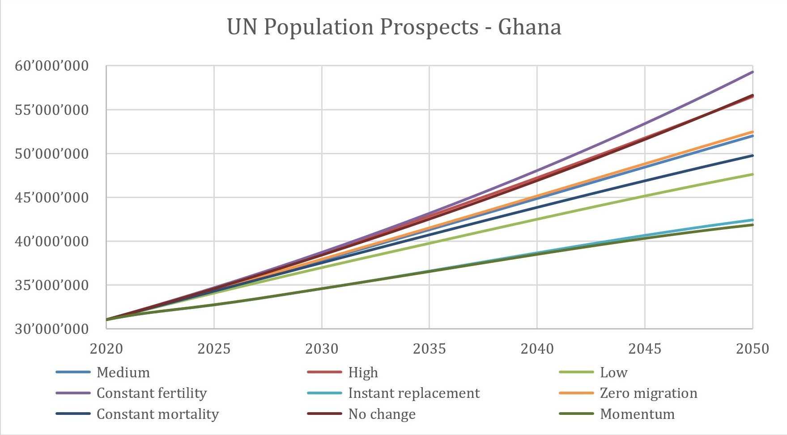
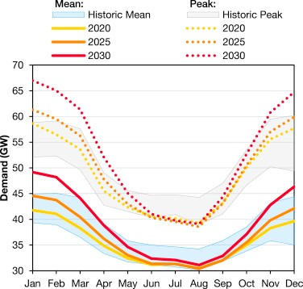
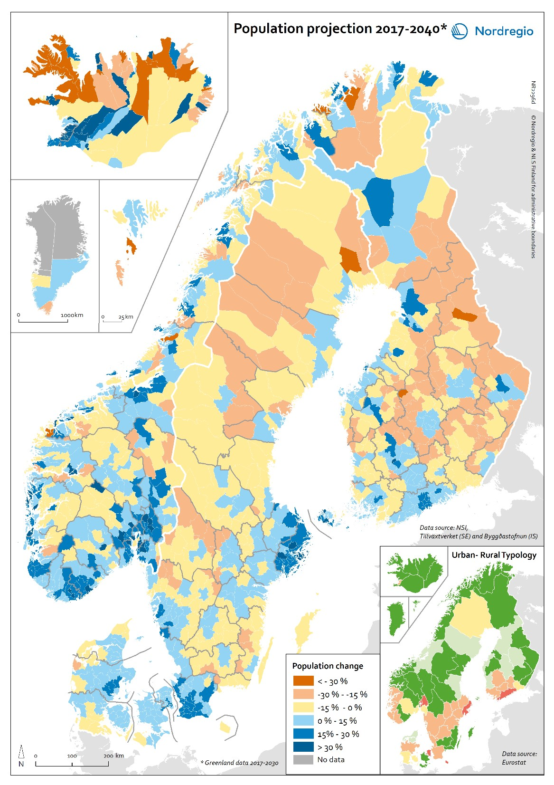

This mini-lecture will continue exploring the main infrastructure drivers and their specific features. It will also serve as a guide to select different drivers according to different case study applications.
This mini-lecture will continue exploring the main infrastructure drivers and some of their specific features. It is important to note that different cases and applications will need different considerations of drivers, narratives and factors. Complementary to future scenarios, a detailed approach to the construction of infrastructure strategies will be shown in Lecture 6.
As we have seen with the example of Shared Socio-economic Pathways (SSPs), the nature of the future narratives we want to explore are crucial in the development of forecasts. In its simplest form, we can assume that current consumption patterns will remain unchanged in the future and infrastructure demand will be driven only by population growth. The complexity of the estimation increases when we assume long-term trends on economic development, urbanisation and demographics. This entails not only an interdependent analysis of infrastructure and the economy, but potentially an explicit spatial analysis for the urban development driver.
The considered time span is also of importance, given that the more distant the future, the higher the uncertainty. For instance, a projection of a couple of decades in the future might hold some assumptions of current technologies and patterns. However, a forecast toward the end of the century might need assumptions about disruptive technological and socio-economic changes that can fundamentally restructure our relationship with infrastructure services.
As we have seen in previous mini-lectures, population is one of the main drivers of future infrastructure demand (Thoung et al. 2016). Population forecasts can be typically found in national or regional statistics authorities with different levels of detail and features. Here, we will provide a detailed review on one high-quality worldwide forecast by the United Nations that can be used for the development of policies and planning.
The United Nations regularly publishes World Population Prospects (United Nations Department of Economic and Social Affairs 2019), with detailed population estimations. The document provides estimations for 235 countries by using two demographic trends: population growth and population ageing. One of the main features of this publication is that it brings several Population Scenarios including low, medium and high variants, and different narratives such as “constant fertility,” “instant replacement,” “zero migration,” “constant mortality” and “no change.” In this way, it provides a broad range of options for selecting the scenarios based on fertility, mortality and migration considerations. Figure 4.2.1 shows this broad range of scenarios for the population of Ghana by 2050.

Figure 4.3.1: Population Forecasting for Ghana under different scenarios (based on data from United Nations Department of Economic and Social Affairs (2019))
Furthermore, the World Population Prospects provides probabilistic estimations including prediction intervals that can help with uncertainty quantification and detailed analysis for infrastructure planning.
Based on the analysis of population trends, the next step is to estimate the infrastructure services that will be needed, which is normally done on a per capita basis. Per capita consumption rates can be found in the literature, policy documents and utilities´ reports, or can be discussed with policy makers according to their visions and expectations to the future. Some useful per capita consumption rates can be found, for example, in the World Bank Development indicators (World Bank 2021) for different countries and regions about energy and water consumption. These consumption rates, however, might change with the socio-economic development of the region (Thoung et al. 2016).
One simple way of forecasting infrastructure demand is by doing annual aggregates and looking at year-over-year changes. However, our needs, and consequently infrastructure demand, is not uniform throughout the four seasons of a calendar year. For instance, in Europe, heating needs increase over the northern-hemisphere winter, putting pressure on the energy system. While our infrastructure should provide services over the whole year, it is particularly important to provide a reliable service when it’s needed the most. Other examples are seasonal tourism, which is an important demand factor in small islands, and the equilibrium between water demand and supply that can be under stress throughout the dry season.
Figure 4.3.2 shows the seasonal changes of energy demand for the UK compared with the mean demand along the year. This seasonal pattern persists in the projections of the future.

Figure 4.3.2: Seasonal energy demand in the UK (Staffell and Pfenninger 2018)
Another simplification in infrastructure forecasting is to develop national aggregates for central planning purposes. However, the spatial distribution of infrastructure needs might be crucial for several applications. This is clearer with the development of mega urban centres in which infrastructure demand is high. On the other hand, when looking into the future, the potential rural-urban migration, or the development of satellite urban settlements, play a role in how we perform our infrastructure planning. Scenario narratives might also influence the spatial distribution of demand. For instance, one explored scenario might be the expansion of current urban centres while a different scenario might assume a redistribution of development along semi-urban and rural areas. Figure 4.3.3 shows how different regions bring different changes in population by 2040 in the Nordic countries. These different spatial changes will also bring different challenges for the coverage that our distribution networks need to reach. While an expansion on the national electricity transmission network is not a major issue, other more regional-dependent infrastructures such as water and waste will need a more granular analysis of the future local and regional needs.

Figure 4.3.3: Spatial population change in Nordic municipalities by 2040 (Gassen and Heleniak 2019)
Planning methods under uncertainty have developed extensively during the last decades, mainly due to the critical importance of climate change for our future (Lempert and Groves 2010; Haasnoot et al. 2013). Alongside the importance of adaptation and mitigation, climate change might have an impact on our ability to meet infrastructure demand. Firstly, climate change can modify our consumption patterns in terms of heating, cooling and demand for services (Clarke et al. 2018). It will certainly increase the seasonal variability of demand and have major impacts on our supply systems. For instance, changes in temperature, wind and rainfall patterns will affect the functioning of renewable energy (solar and wind) and water supplies (Urich and Rauch 2014) (as seen in mini-lecture 4.2). Another chronic effect that might be important for infrastructure planning is the inevitable ageing of infrastructure assets, or the slow deterioration of our systems, which can be mitigated by good maintenance programmes. Also, strong demographic changes (increasing elderly population and variation in gender profiles) can play a role in modified consumption patterns into the future. In summary, different contexts might require a different set of drivers.
In this mini-lecture we explored in more detail some infrastructure demand drivers such as population growth and per capita consumption rates. We also comment on seasonal effects and spatially distributed demand as important features to take into account in different contexts.